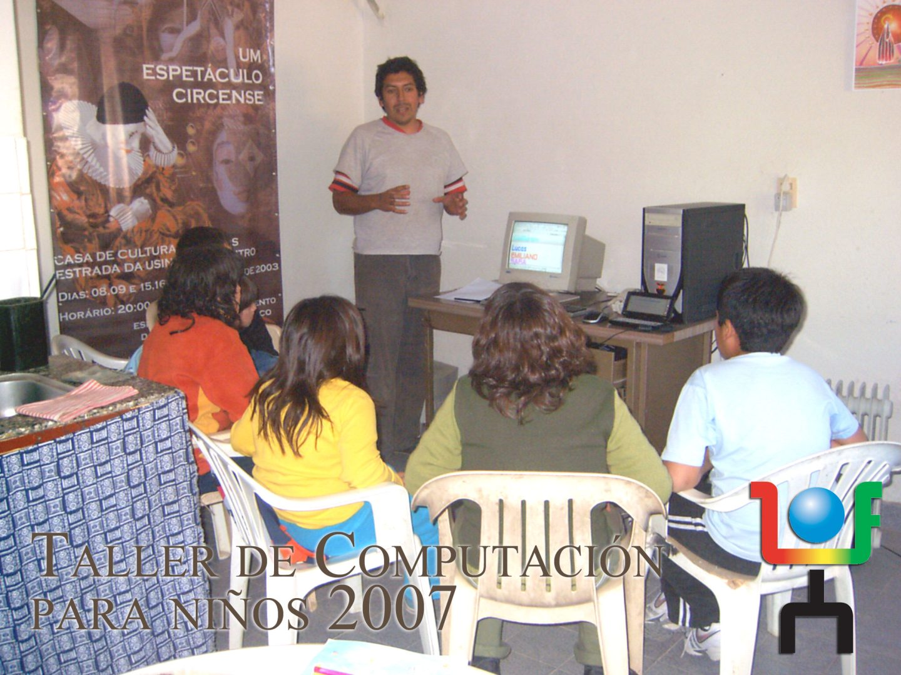
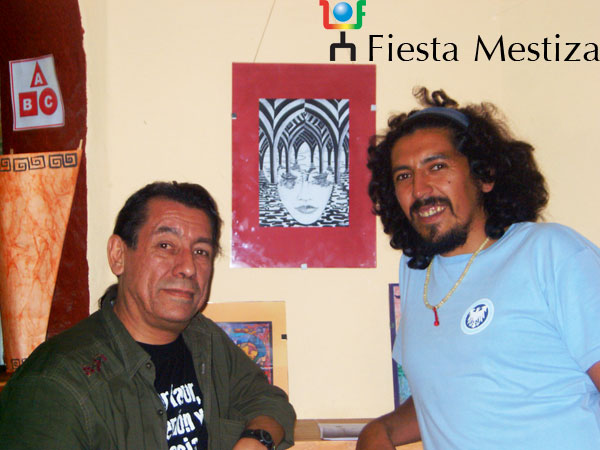
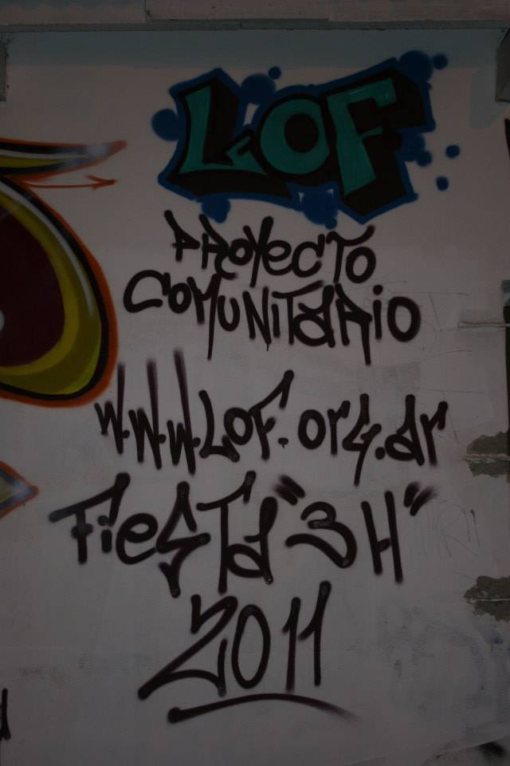
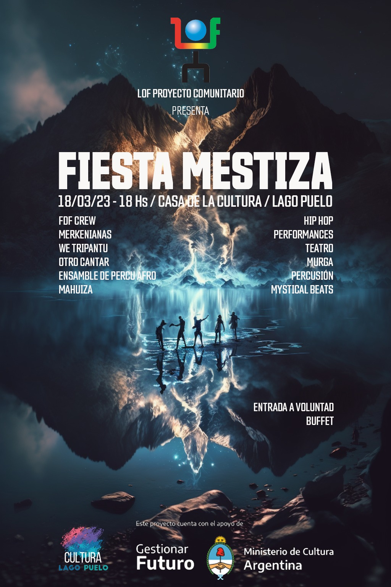
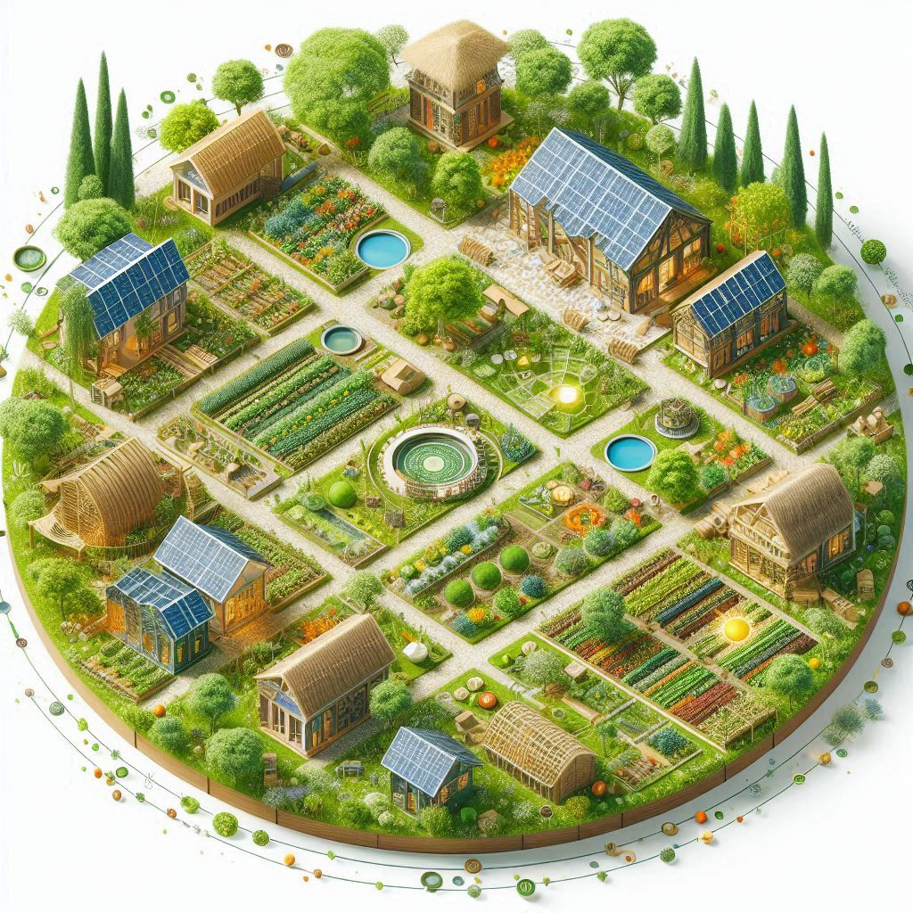
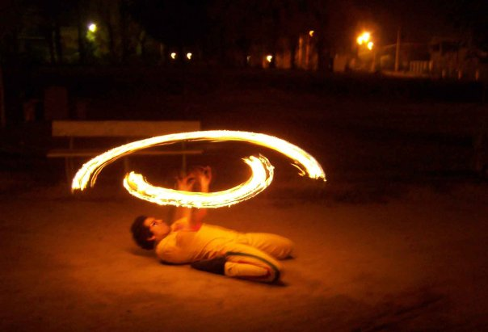
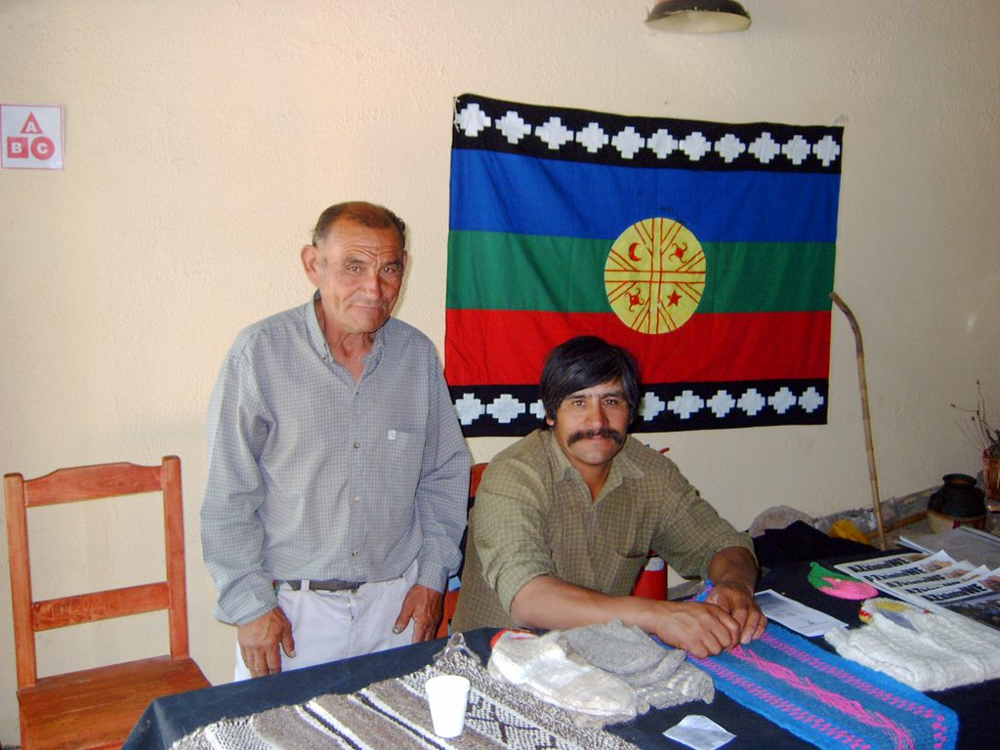

Comunidad
Comunidad
Más de 20 años construyendo espacios inclusivos en la Patagonia

La tecnología y el arte como herramientas de transformación social. Desde 2003, construyendo comunidad en la Patagonia Argentina.
Proyecto comunitario
LOF Proyecto Comunitario
Asociación civil fundada en 2003 en la Patagonia Argentina, dedicada al trabajo educativo, social y cultural. Un espacio donde la tecnología, el arte y la educación se encuentran para construir comunidad.
A lo largo de más de dos décadas, LOF ha desarrollado más de 100 talleres en disciplinas diversas: nuevas tecnologías, murga, ecología, plástica, guitarra, cerámica, video, fotografía e informática. Cada taller es un espacio de encuentro, aprendizaje y creación colectiva.

Fiesta Mestiza
11 ediciones · Cientos de artistas · Miles de espectadores
Un festival que celebra la diversidad cultural de la Patagonia. Once ediciones reuniendo música, danza, teatro y artes visuales en un evento que se convirtió en referencia cultural de la región.

3H — Huilli Hip Hop
Hip hop patagónico en expansión
Una fiesta de hip hop nacida en la Patagonia que se expande por la región. Un espacio donde la cultura urbana se encuentra con el territorio patagónico, generando una expresión artística única.
Ciclos de cine
Cine con contenido social
Proyecciones y debates que utilizan el cine como herramienta de reflexión comunitaria. Películas y documentales que abren conversaciones sobre temas sociales, ambientales y culturales.
Seminarios y capacitaciones
Alianzas con instituciones
Formación en alianza con bibliotecas populares, universidades y centros de jubilados. Espacios de aprendizaje intergeneracional que fortalecen el tejido social de la comunidad.

Talleres
Tecnología, arte, música, ecología, cerámica, fotografía y más.
Personas alcanzadas
Participantes, espectadores y comunidades involucradas.
Años de trabajo
Continuidad y compromiso con la comunidad desde 2003.
Eventos culturales
Festivales, ciclos de cine, seminarios y encuentros.

El sueño: crear una Eco Aldea con Centro Cultural y Educativo en la Patagonia. Un espacio sustentable donde la cultura, la educación y la naturaleza convivan en armonía.
Filosofía
Lo que nos mueve
Principios que guían nuestro trabajo comunitario.

Tecnología inclusiva
Herramienta de transformación
La tecnología como herramienta de inclusión y transformación social. No como privilegio de pocos sino como derecho de todos. Cada taller, cada capacitación busca acortar la brecha digital y empoderar a las comunidades.
Arte comunitario
Espacio de encuentro
El arte como espacio de encuentro comunitario. Cuando las personas crean juntas, se reconocen, se escuchan, se transforman. El arte no es decoración: es un lenguaje para construir comunidad.
Educación liberadora
Acto de libertad
La educación como acto de libertad. Aprender no es repetir sino descubrir, cuestionar, imaginar. Cada espacio educativo que abrimos es una invitación a pensar el mundo de otra manera.
Territorio patagónico
Resistencia y creación
El territorio patagónico como lugar de resistencia y creación. La Patagonia no es un paisaje vacío: es un territorio vivo, con historias, luchas y sueños. Nuestro trabajo nace de este suelo y vuelve a él.
Red
Colaboraciones
El trabajo comunitario se construye en red.

A lo largo de estos años, LOF ha tejido alianzas con universidades, bibliotecas populares, centros de jubilados, escuelas, organizaciones sociales y otras asociaciones civiles de la Patagonia y de todo el país. Cada colaboración fortalece la red y amplifica el impacto del trabajo comunitario.
Universidades
Proyectos de extensión, investigación participativa y formación conjunta.
Bibliotecas populares
Talleres, ciclos culturales y programas de alfabetización digital.
Asociaciones civiles
Trabajo en red con organizaciones sociales, culturales y ambientales.
Si querés apoyar el trabajo de LOF y contribuir a seguir construyendo espacios inclusivos en la Patagonia, podés colaborar a través de la página de donaciones.